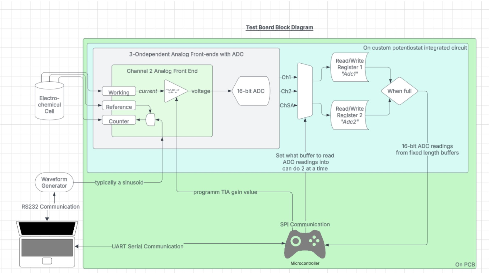

BIOMADE Electrochemical Bioreactor Monitoring#
Biomade Electrochemical Bioreactor Monitoring guide
Project Goal
Deploy a miniaturized biosensor to continuously monitor and report data from within a bioreactor environment.
What is a Bioreactor?
A bioreactor is a vessel or system designed to cultivate microorganisms, cells, or tissues under controlled conditions. It allows for the manipulation of biological processes to produce specific products, such as medicines, food ingredients, or biofuels. By providing an optimal environment for biochemical reactions, bioreactors enable organisms to grow and transform raw materials into useful products
How Does the Chip Work (High-Level)?
The system consists of electrodes submerged in a biological environment (e.g., a cell solution). The interaction between the electrodes and the biological solution behaves similarly to a capacitor. Thus, we can model this interaction using electrical circuits.
How it is Done#
- Electrochemical Impedance Spectroscopy (EIS): The chip uses EIS to measure the impedance of the biological solution, which provides information about the solution's properties and the interaction with the electrodes.
- Cyclic Voltammetry (CV): Sweeps across a voltage range, measuring current readings. For our purposes, a change in current (e.g., an increase in current) can correlate with an increase in the concentration of cells.
- For our purposes, a change in current (e.g., an increase in current) can correlate with an increase in the concentration of cells. We have also worked with can perform amperometry on custom chips and commercial devices.
Chip Component Breakdown:#
- Custom Potentiostat Chip: Designed by Alperen (PhD-analog security) & Dilara (PhD-analog front-end).
- What is a Potentiostat?A potentiostat is an analytical instrument designed to control the working electrode's potential in a multiple-electrode electrochemical cell. The potentiostat contains many internal circuits that allow it to function in this capacity. The circuits generate and measure potentials and currents. (What is a potentiostat)
- Potentiometers: Adjust and calibrate resistance to fine-tune the board. On the minimized board, fixed resistors (determined by Alperen) will replace variable resistors.
- FPGA:Used for digital signal clocking
- Microcontroller: Manages the chip’s operations and communication (Computer ← UART → Microcontroller ← SPI → Custom IC Chip).
- Programming:Implemented in Python with thousands of lines of code.
- Electrode Connectors: Three independent channels (CH1, CH2, and CHSA) are used for debugging purposes on the large-scale test board. These channels connect to probes interacting with the biological solution.
- Excitation Frequency (EIS): To collect data, the electrode is excited with a sine wave of varying frequencies over time.
- External Waveform Generator:Used to generate the excitation signal.
- Current Measurement:The chip measures the current and calculates impedance (since the voltage is known). The goal is to demonstrate that an increase in current corresponds to an increase in cell concentration or optical density (OD).
Functionality#
- Waveform Application:Needed to measure electrode waveform.
- Electrode Output: Produces a waveform that is compared to the applied waveform to measure phase difference and impedance components (real and imaginary parts).
- Electrochemical Cell Waveform Analysis: Helps determine characteristics of the biological environment.
Project Significance:#
Bioreactors are essential for biomanufacturing chemicals. This project, in collaboration with an industry leader in biomanufacturing, aims to integrate multiple disciplines to develop systematic biosensors for biomanufacturing applications.
Why This Matters:#
Importance of Bioreactors in Biomanufacturing
- Bioreactors are essential for biomanufacturing chemicals.
- They create biologically active environments for industrial biotechnology.
Industry Collaboration
- The project is in partnership with an industry leader in biomanufacturing.
- The goal is to integrate multiple fields to develop systematic biosensors for biomanufacturing applications.
CapraScience’s Biofilm Reactor
- Utilizes feedstock waste to sustain cells and produce retinol (Vitamin A).
- Offers positive environmental impacts by repurposing waste materials.
Challenges in Bioreactor Monitoring
- Currently, bioreactors lack real-time internal monitoring.
- Monitoring relies on small, localized samples, which may miss early-stage issues.
- Late detection of problems can compromise large quantities of the compound.
- Traditional bioreactor monitoring relies on small localized sampling, which may not detect issues in time, leading to product loss.
WISE Circuit Group’s Solution
- Developing an electrochemical biosensor (potentiostat chip) for wireless, continuous monitoring.
- Inspired by ingestible biosensing technology to enhance real-time data collection.
Benefits of Wireless Sensors
- Enables comprehensive monitoring across the entire bioreactor column.
- Allows for early issue detection, reducing manufacturing costs and waste.
- Ensures biomanufacturing processes remain as expected.
Benefits of Wireless Sensors
- Enables comprehensive monitoring across the entire bioreactor column.
- Allows for early issue detection, reducing manufacturing costs and waste.
- Ensures biomanufacturing processes remain as expected.
Automation and Economic Impact
- Reduces the need for human intervention, lowering operational costs.
- Increases automation and efficiency in biomanufacturing.
- Enables reactors to adapt dynamically to changes over time.
Supply Chain & Environmental Benefits
- Enhances supply chain efficiency by optimizing reactor performance.
- Facilitates sustainable biomanufacturing through the use of waste-based feedstock.
-------------------------------------------------------------------------------------------------------
Resources#
Relevant Research Papers:
Q. Lin et al., “A Multichannel Electrochemical Sensor Interface IC for Bioreactor Monitoring,” IEEE Transactions on Biomedical Circuits and Systems, vol. 17, no. 6, pp. 1227–1236, Dec. 2023, doi: 10.1109/TBCAS.2023.3315480.
B. S. B. Salomi and C. K. Mitra, “Electrochemical Studies on Horseradish Peroxidase Covalently Coupled with Redox Dyes,” Biosensors and Bioelectronics,vol. 22, no. 8, pp. 1825–1829, Mar. 2007, doi: 10.1016/j.bios.2006.08.042.
N. Todtenberg, J. Klatt, S.-T. Schmitz-Hertzberg, F. Jorde, and K. Schmalz, “Wireless Sensor Capsule for Bioreactors,” IEEE MTT-S International Microwave Workshop Series on RF and Wireless Technologies for Biomedical and Healthcare Applications,Dec. 2013, pp. 1–3. doi: 10.1109/IMWS-BIO.2013.6756236.
O. Gutsul, D. Rutherford, M. Barinkova, and V. Slobodyan, “The Detection of E. coli and S. aureus on Sensors without Immobilization by Using Impedance Spectroscopy,”Engineering Proceedings, vol. 58, no. 1, Art. no. 1, 2023, doi: 10.3390/ecsa-10-16073.
- IEEE Xplore Link